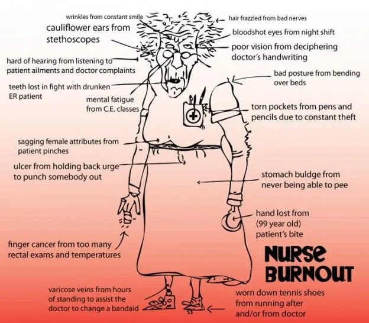

Expanded Nursing Uganda Explanation
Job stress and associated conditions should be understood beyond a short definition. Link the concept to patient history, focused assessment, common risks, nursing priorities, documentation and evaluation of outcomes.
01 Job stress and associated conditions
Job stress is the harmful physical and emotional responses that occur when the requirements of the job do not match the capabilities, resources, or needs of the worker.
Job stress matters to our health and our work.
When we feel stressed, our bodies respond by raising the concentration of stress hormones in our blood. When our bodies continually respond to constant demands or threats, coping mechanisms stay in overdrive, which can be damaging to health over time
Stressful working conditions can also impact health indirectly by limiting our ability or motivation to participate in other health promoting behaviors such as eating well and exercising.
Definitions
- Stress : a (perceived) substantial imbalance between demand and response capability under conditions where failure to meet demand has important (perceived) consequences.
- Stressor : environmental event or condition that results in stress.
- Stressful : pertaining to an environment that has many stressors.
- Strain (or stress reaction) : short-term physiological, psychological or behavioral manifestations of stress.
02 **Types of stress**
Stress is not always bad.
Stress in the form of a challenge energizes us psychologically and physically, and it motivates us to learn new skills and master our work.
When a challenge is met, we feel relaxed and satisfied. This is good stress or eustress . However, sometimes a challenge is turned into job demands that cannot be met. This is negative stress , or distress , which sets the stage for illness, injury, and job failure.
There are several types of stress, including:
- Acute stress
- Episodic acute stress
- Chronic stress
An acute stress reaction occurs when symptoms develop due to a particularly stressful event. The word ‘acute’ means the symptoms develop quickly but do not usually last long.
The events are usually very severe and an acute stress reaction typically occurs after an unexpected life crisis. This might be, for example, a serious accident, sudden bereavement, or other traumatic events. Acute stress reactions may also occur as a consequence of sexual assaults or domestic violence. Acute stress can also come out of something that you actually enjoy. It’s the somewhat-frightening, yet thrilling feeling you get on a roller coaster or when skiing down a steep mountain slope. These incidents of acute stress don’t normally do you any harm. They might even be good for you. Stressful situations give your body and brain practice in developing the best response to future stressful situations.
Once the danger passes, your body systems should return to normal.
Episodic Stress occurs when we experience acute stress too frequently.
It often hits those who take on too much―those who feel they have both self-imposed pressure and external demands vying for their attention.
In such cases, hostility and anger frequently result. Episodic stress also commonly afflicts those who worry a lot of the time, in turn resulting in anxiety and depression.
This might also happen if you’re often anxious and worried about things you suspect may happen e.g. certain professions, such as law enforcement or firefighters, might also lead to frequent high-stress situations.
Chronic Stress leads to serious health problems, because it disrupts nearly every system in your body. Part of what makes chronic stress so insidious is its ability to become a “normal” feeling. This pattern of enduring is what makes chronic stress such a serious health issue.
Poverty, trauma, general pressure from the demands of life, and more can all cause chronic stress. When you have high-stress levels for an extended period of time, you have chronic stress. Long-term stress like this can have a negative impact on your health. It may contribute to:
- Anxiety
- Cardiovascular disease
- Depression
- High blood pressure
- A weakened immune system
03 Common Stressors at the Workplace
I. Job-related Stressors
A. Job Structure
- Overtime : Excessive work hours beyond regular working hours can lead to fatigue, reduced work-life balance, and increased pressure.
- Shift work : Irregular work schedules, such as rotating shifts or night shifts, can disrupt sleep patterns and negatively impact physical and mental well-being.
- Machine pacing : When the speed of machines or equipment sets the pace of work, employees may feel pressured to keep up, leading to stress and potential health issues.
- Piecework : Being paid based on the number of tasks completed can create pressure to work quickly, potentially compromising quality and increasing stress levels.
B. Job Content
- Quantitative overload : Having excessive work demands, such as high workloads or tight deadlines, can result in stress, time pressure, and difficulty maintaining quality work.
- Qualitative underload : Experiencing tasks that lack challenge or do not fully utilize one’s skills and abilities can lead to boredom, dissatisfaction, and reduced motivation.
II. Physical Conditions
- Unpleasant Odor : Working in an environment with unpleasant smells can be distracting, uncomfortable, and contribute to overall dissatisfaction.
- Threat of physical or toxic hazards : Fear of potential accidents, injuries, or exposure to toxic substances can create anxiety and stress among employees.
III. Organizational Factors
- Role Conflict : Conflicting expectations or demands from different roles or job responsibilities can create stress and uncertainty.
- Competition : An environment that fosters excessive competition among employees may lead to heightened stress levels and strained relationships.
- Rivalry : Unhealthy competition or rivalries between individuals or teams within the organization can create tension and stress.
IV. Extra-organizational Stressors
- Job Insecurity : Uncertainty about job stability or fear of losing employment can significantly impact an individual’s well-being and increase stress levels.
- Career Development : Lack of opportunities for growth, advancement, or training can lead to frustration and a sense of stagnation.
- Commuting : Long and stressful commutes can contribute to fatigue, reduced work-life balance, and overall stress levels.
V. Other Sources of Stress
- Personal : Personal issues, such as financial problems, health concerns, or relationship difficulties, can affect an individual’s ability to cope with workplace stressors.
- Family : Family-related challenges, including conflicts, caregiving responsibilities, or major life events, can add to overall stress levels.
- Community : Factors outside of work, such as social or environmental issues within the community, can impact an individual’s well-being and contribute to stress.
VI. Organizational Stressors
- Change : Periods of organizational change, such as restructuring or mergers, can create uncertainty, resistance, and stress among employees.
- Inadequate Communication : Poor communication channels or lack of information flow within the organization can lead to misunderstandings, conflict, and increased stress levels.
- Interpersonal Conflict : Disagreements, tensions, or hostile relationships among colleagues can create a stressful work environment.
- Conflict with Organizational Goals : Misalignment between personal values and organizational objectives can result in job dissatisfaction and increased stress.
VII. Role-related Stressors
- Role Conflict : Conflicting expectations or demands within a specific job role can lead to stress, confusion, and difficulty prioritizing tasks.
- Role Ambiguity : Unclear or undefined job responsibilities and expectations can cause anxiety, frustration, and reduced job satisfaction.
- Inadequate Resources to Accomplish Job : Insufficient tools, equipment, or support to perform job tasks effectively can lead to stress and hinder job performance.
- Inadequate Authority to Accomplish Job : Having limited decision-making power or authority to address work-related issues can create frustration and hinder productivity.
VIII. Task-related Stressors
- Quantitative and Qualitative Overload : Having excessive quantitative (amount) or qualitative (complexity) demands within job tasks can lead to stress, reduced performance, and potential burnout.
- Quantitative and Qualitative Underload : Insufficient task demands or lack of challenging work can result in boredom, disengagement, and reduced motivation.
- Responsibility for the Lives and Well-being of Others : Jobs that involve the safety and well-being of others, such as healthcare or emergency services, can create significant stress due to the high level of responsibility.
- Low Decision-making Latitude : Limited autonomy or control over decision-making processes can lead to feelings of disempowerment, frustration, and increased stress.
IX. Work Environment Stressors
- Poor Aesthetics : Unpleasant or uncomfortable workspaces lacking visual appeal or ergonomic design can contribute to stress and reduced well-being.
- Physical Exposures : Exposure to physical factors like extreme temperatures, inadequate lighting, or poor air quality can impact health and increase stress levels.
- Ergonomic Problems : Poor ergonomics, such as uncomfortable workstations or repetitive strain injuries, can cause physical discomfort and contribute to stress.
- Noise : Excessive noise levels in the workplace can disrupt concentration, impair communication, and lead to irritation and stress.
- Odors : Strong or unpleasant odors in the work environment can create discomfort, distraction, and negatively affect overall well-being.
- Safety Hazards : Presence of potential workplace hazards or lack of safety measures can generate anxiety, fear, and stress among employees.
- Shift Work : Irregular work schedules, especially night shifts, can disrupt sleep patterns, affect circadian rhythms, and increase stress levels.
A. Physiological
S hort-term:
- Catecholamines : Stress hormones released in response to acute stress situations.
- Cortisol : Stress hormone involved in regulating various physiological processes.
- Increased Blood Pressure : Elevated blood pressure as a physiological response to stress.
Long-term:
- Hypertension : Prolonged high blood pressure resulting from chronic stress can lead to cardiovascular problems.
- Heart Disease : Chronic stress can contribute to the development of heart-related conditions.
- Ulcers : Chronic stress may increase the risk of developing ulcers or worsening existing ones.
- Asthma : Stress can exacerbate symptoms and trigger asthma attacks.
B. Psychological (Cognitive and Affective)
Short-term:
- Anxiety: Feeling of unease, worry, or fear associated with stressors.
- Dissatisfaction: Feeling unsatisfied or discontented with one’s job or work environment.
- Mass Psychogenic Illness: A phenomenon where stress or anxiety spreads among a group, resulting in physical symptoms.
Long-term:
- Depression: Prolonged exposure to chronic stress can increase the risk of developing depression.
- Burnout: Extreme exhaustion, cynicism, and reduced efficacy resulting from chronic workplace stress.
- Mental Disorders: Chronic stress can contribute to the development or exacerbation of various mental health conditions.
C. Behavioral
Short-term:
- Job : Absenteeism, Reduced Productivity, and Participation: High levels of stress can lead to increased absenteeism, decreased productivity, and reduced engagement in work-related activities.
- Community : Decreased Friendships and Participation: Stress can negatively impact social relationships and reduce engagement in community activities.
- Personal : Excessive Use of Alcohol and Drugs, Smoking: Individuals may engage in unhealthy coping mechanisms, such as substance abuse or excessive smoking, to manage stress temporarily.
04 Signs and Symptoms of Job Stress
- Headache : Persistent or recurrent headaches can be a physical manifestation of stress and tension.
- Sleep disturbances : Difficulty falling asleep, staying asleep, or experiencing restless sleep patterns can be indicators of job-related stress.
- Stomach Upset : Stress can contribute to digestive issues such as stomachaches, indigestion, or gastrointestinal discomfort.
- Difficulty concentrating : High levels of stress can make it challenging to concentrate and focus on tasks.
- Short temper : Increased irritability and a short temper may arise due to the cumulative effects of job stress, leading to strained relationships with colleagues and patients.
- Fatigue : Chronic fatigue and low energy levels can result from prolonged exposure to job stress.
- Muscle aches and pains : Stress-induced muscle tension and strain can cause body aches, particularly in the neck, shoulders, and back.
- Over- and under-eating : Job stress can disrupt normal eating patterns, leading to changes in appetite and potentially resulting in unhealthy eating habits.
- Chronic mild illness : Long-term job stress may weaken the immune system, making workers more susceptible to frequent minor illnesses such as colds or infections.
- Anxiety : Feelings of worry, apprehension, or unease are common symptoms of job-related stress and can significantly impact any workers emotional well-being.
- Irritability : Nurses experiencing job stress may become easily annoyed or frustrated, leading to increased interpersonal conflicts.
- Depression : Prolonged exposure to high levels of stress can contribute to feelings of sadness, hopelessness, and a loss of interest or pleasure in activities.
- Gastrointestinal problems : Stress can manifest as gastrointestinal symptoms, such as stomach cramps, diarrhea, or constipation.
- Angry outbursts : Intense emotions resulting from job stress can lead to episodes of anger or emotional outbursts.
- Accidents : Reduced concentration and impaired cognitive function due to job stress can increase the risk of accidents or errors at work.
- Substance use and abuse : Some nurses may turn to substances like alcohol or drugs as unhealthy coping mechanisms in response to job stress.
- Isolation from co-workers : Excessive stress may cause employees to withdraw from social interactions with colleagues, leading to feelings of isolation or disengagement.
- Job dissatisfaction: Job stress can contribute to feelings of dissatisfaction or disillusionment with the nursing profession, potentially impacting overall job satisfaction.
- Low morale : Prolonged exposure to job stress can erode morale, affecting their motivation and commitment to work.
- Marital and family problems : Job stress can spill over into personal relationships, leading to conflicts, strained family dynamics, or difficulty maintaining work-life balance.
05 Prevention and Control of Stress
To effectively prevent and control stress in the workplace, a comprehensive approach that addresses both the individual and organizational factors is necessary. The following strategies can be implemented:
I. Treat the Individual
A. Medical Treatment
- Hypertension : Providing medical treatment and management for employees with hypertension to reduce the physiological effects of stress.
- Backache : Offering appropriate medical interventions, such as physical therapy or pain management, for employees experiencing backaches caused by stress-related factors.
- Depression : Identifying and treating individuals with depression through therapy, counseling, or medication.
B. Counseling Services and Employee Assistance Programs
- Providing access to counseling services and employee assistance programs to help individuals cope with stressors and develop effective coping mechanisms.
- Addressing addictive behaviors such as smoking, alcohol consumption, and drug abuse through counseling and support programs.
C. Reduce Individual Vulnerability
- Conducting counseling sessions or offering individual and group programs to help individuals build resilience, develop coping skills, and enhance their ability to manage stress effectively.
- Providing training programs that focus on relaxation techniques, medication management, and biofeedback to equip individuals with stress management tools.
D. General Support
- Implementing exercise programs and recreational activities to promote physical and mental well-being, as regular exercise has been shown to reduce stress levels.
II. Treat the Organization
A. Diagnosis
- Conducting attitude surveys and rap sessions to gather feedback and identify sources of stress within the organization.
- Creating opportunities for open and honest communication to address concerns and challenges that contribute to workplace stress.
B. Develop Flexible and Responsive Management Style
- Improving internal communications to ensure clear and effective information flow, promoting transparency and reducing uncertainty.
- Implementing measures to reduce organizational stress, such as fostering a supportive work culture, providing recognition and rewards, and promoting work-life balance.
- Offering variable work schedules that allow employees flexibility in managing their workload and personal commitments.
C. J ob Restructuring
- Job Enlargement : Redesigning job roles to provide employees with a broader range of tasks and responsibilities, reducing monotony and increasing job satisfaction.
- Job Enrichment : Enhancing job content by incorporating meaningful and challenging tasks, granting employees a sense of accomplishment and autonomy.
- Increased Control : Allowing employees to have more control and decision-making authority over their work, reducing feelings of powerlessness and stress.
06 **Principles of a good job design**
- Work schedule : A work schedule should be designed to avoid conflicts with demands and responsibilities outside the job. When rotating shift schedules are used, the rate of rotation should be stable and predictable.
- Participation/control : Workers should be able to provide input into decisions or actions affecting their jobs and the performance of their tasks.
- Workload : Demands should not exceed the capabilities of individuals. Work should be designed to allow recovery from demanding physical or mental tasks.
- Content : Work tasks should be designed to provide meaning, stimulation, a sense of completeness and an opportunity for the use of skills.
- Work roles : Roles and responsibilities at work should be well defined.
- Social environment : Opportunities should be available for social interaction, including emotional support and actual help as needed in accomplishing tasks.
- Job future : Ambiguity should be avoided in matters of job security and career development opportunities.
07 Nursing Uganda Clinical Lens
Use Psychosocial aspects of work: as a practical nursing topic, not only a memorized definition. Translate theory into safe decisions, accountability, communication and service improvement.
- What to understand first: define psychosocial aspects of work:, identify the normal or expected pattern, then explain what changes when the patient is unwell.
- Why it matters in care: the nurse must recognize risk early, explain findings clearly, document accurately and know when to escalate.
- How to revise it: connect each point to assessment, nursing diagnosis or care problem, intervention, rationale and evaluation.
08 Assessment Guide
- The problem, stakeholders, available resources, policy requirements and ethical issues.
- Risks to patients, staff, confidentiality, quality, costs and continuity.
- Documentation, reporting lines, supervision and evaluation measures.
09 Nursing Priorities, Rationales and Outcomes
- Use evidence, policy and professional standards to guide action.
- Communicate clearly, document decisions and protect confidentiality.
- Evaluate whether the action improves safety, learning or service delivery.
The rationale for these priorities is patient safety: nursing actions should prevent deterioration, reduce discomfort, support recovery and create clear evidence for the next caregiver.
- Expected outcome: The plan is documented, realistic, ethical and improves patient care or learning outcomes.
10 Patient Teaching and Revision Check
- Explain psychosocial aspects of work: in simple language the patient or caregiver can repeat back.
- Teach warning signs, medicine or follow-up instructions, hygiene or lifestyle points where relevant.
- For exams, prepare a short answer using: definition, causes or risk factors, signs, assessment, management, complications and prevention.
- For ward practice, document baseline findings, actions taken, patient response and the plan for review.
Illustrations and Diagrams (4)



Related Video Lectures
Watch nursing lecture videos on YouTube for this topic. Opens in a new tab.
Watch on YouTubeExternal link: YouTube may use its own cookies and terms. Nursing Uganda is not affiliated with YouTube.